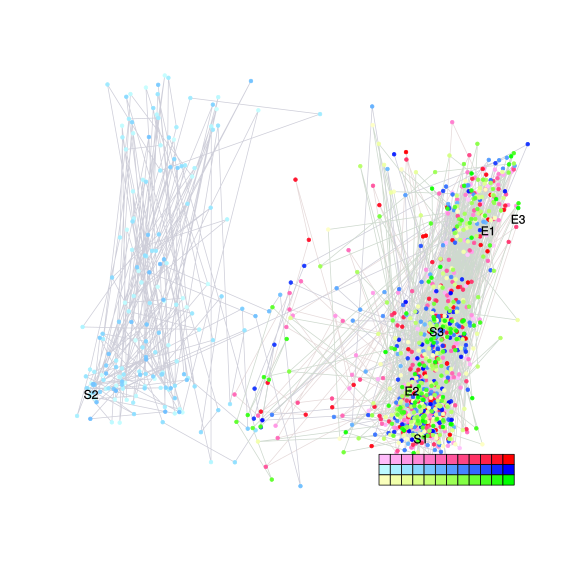
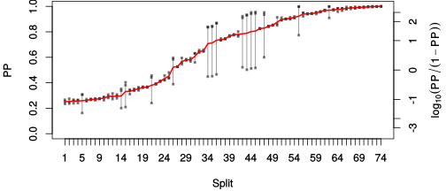
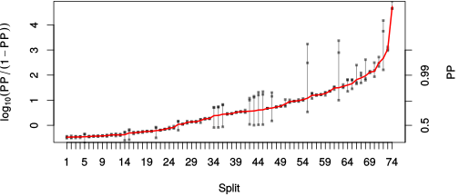

| chain # | burnin | subsample | Iterations (remaining) | command line | subdirectory | directory |
|---|---|---|---|---|---|---|
| 1 | 10000 | 1 | 90000 | /usr/local/bali-phy-3.0-beta2/bin/bali-phy E5_red_clade_aa.fas -s 62341 -S LG -n E5_red_aa | E5_red_aa-1 | /home/willemse/data/trees/BaliPhy/all_E5_aa |
| 2 | 10000 | 1 | 90000 | /usr/local/bali-phy-3.0-beta2/bin/bali-phy E5_red_clade_aa.fas -s 93451 -S LG -n E5_red_aa | E5_red_aa-2 | /home/willemse/data/trees/BaliPhy/all_E5_aa |
| 3 | 10000 | 1 | 90000 | /usr/local/bali-phy-3.0-beta2/bin/bali-phy E5_red_clade_aa.fas -s 84233 -S LG -n E5_red_aa | E5_red_aa-3 | /home/willemse/data/trees/BaliPhy/all_E5_aa |
| P(data|M) = -6553.642 +- 0.409 | Complete sample: 270002 topologies | 95% Bayesian credible interval: 256502 topologies |
Phylogeny Distribution

| Partition support: Summary |
| Partition support graph: SVG |
{kind=link}
| 50% consensus | Newick (+PP) | SVG | |||||
| 66% consensus | Newick (+PP) | SVG | |||||
| 80% consensus | Newick (+PP) | SVG | |||||
| 90% consensus | Newick (+PP) | SVG | |||||
| 95% consensus | Newick (+PP) | SVG | |||||
| 99% consensus | Newick (+PP) | SVG | |||||
| 100% consensus | Newick (+PP) | SVG | |||||
| MAP | Newick (+PP) | SVG | |||||
| greedy | Newick (+PP) | SVG |
{kind=link}
{kind=link}
{kind=link}
{kind=link}
{kind=link}
{kind=link}
{kind=link}
{kind=link}
Alignment Distribution
Partition 1
| Diff | Min. %identity | # Sites | Constant | Informative | ||||
|---|---|---|---|---|---|---|---|---|
| Initial | FASTA | HTML | Diff | 0.735% | 165 | 1 (0.606%) | 162 (98.2%) | |
| Best (WPD) | FASTA | HTML | AU | 0.763% | 312 | 1 (0.321%) | 260 (83.3%) |
Mixing
{kind=link}
{kind=link}
| burnin (scalar) | ESS (scalar) | ESS (partition) | ASDSF | MSDSF | PSRF-CI80% | PSRF-RCF |
|---|---|---|---|---|---|---|
| 51014 | 19.64 | 10.328 | 0.043 | 0.252 | 1.087 | 1.009 |
Projection of RF distances for the first 3 chains3D | Variation of split PPs across chains |
Scalar variables
| Statistic | Median | 95% BCI | ACT | ESS | burnin | PSRF-CI80% | PSRF-RCF |
|---|---|---|---|---|---|---|---|
| prior | -143.6 | (-201.3, -89.65) | 49.99 | 5400 | 1137 | 1.001 | 1.002 |
| prior_A1 | -597.1 | (-645.8, -553.4) | 50.83 | 5312 | 880 | 1 | 1.004 |
| likelihood | -6522 | (-6555, -6490) | 2524 | 106 | 2081 | 1.012 | 0.9952 |
| logp | -6666 | (-6721, -6615) | 108.1 | 2497 | 2186 | 1.002 | 1.005 |
| Heat.beta | 1 | ||||||
| Scale1 | 20.76 | (16.43, 25.6) | 1.192 | 226426 | 154 | 0.9998 | 1.001 |
| S1.F.pi.A | 0.05645 | (0.04516, 0.06864) | 7.854 | 34376 | 337 | 1.001 | 0.9971 |
| S1.F.pi.R | 0.04048 | (0.03, 0.05212) | 9.038 | 29873 | 230 | 1.001 | 1.002 |
| S1.F.pi.N | 0.0216 | (0.01457, 0.02932) | 7.859 | 34353 | 339 | 1 | 1.009 |
| S1.F.pi.D | 0.04106 | (0.02777, 0.05522) | 9.851 | 27409 | 544 | 1 | 1.002 |
| S1.F.pi.C | 0.06152 | (0.0471, 0.07687) | 9.584 | 28172 | 388 | 1 | 0.9954 |
| S1.F.pi.Q | 0.03536 | (0.02646, 0.04501) | 8.623 | 31313 | 411 | 1 | 1.004 |
| S1.F.pi.E | 0.01667 | (0.009961, 0.02422) | 8.455 | 31935 | 355 | 1.001 | 1.003 |
| S1.F.pi.G | 0.05474 | (0.03943, 0.07208) | 11.54 | 23404 | 212 | 1.001 | 1.001 |
| S1.F.pi.H | 0.03424 | (0.02519, 0.04442) | 8.163 | 33077 | 142 | 1 | 1.004 |
| S1.F.pi.I | 0.05749 | (0.04836, 0.06727) | 8.726 | 30943 | 467 | 1 | 0.9934 |
| S1.F.pi.L | 0.179 | (0.1596, 0.1994) | 9.818 | 27499 | 341 | 1 | 0.9997 |
| S1.F.pi.K | 0.02306 | (0.01529, 0.03177) | 11.81 | 22862 | 326 | 1.001 | 1.001 |
| S1.F.pi.M | 0.01997 | (0.01497, 0.02542) | 8.755 | 30840 | 488 | 1 | 1 |
| S1.F.pi.F | 0.0658 | (0.05416, 0.07817) | 9.952 | 27131 | 305 | 1 | 0.9985 |
| S1.F.pi.P | 0.02659 | (0.0171, 0.03754) | 8.394 | 32167 | 522 | 1 | 0.9998 |
| S1.F.pi.S | 0.05125 | (0.04041, 0.06284) | 8.174 | 33031 | 511 | 1 | 0.9987 |
| S1.F.pi.T | 0.07244 | (0.05942, 0.08568) | 8.59 | 31433 | 418 | 1 | 0.9997 |
| S1.F.pi.W | 0.01805 | (0.01115, 0.02603) | 8.374 | 32242 | 426 | 0.9999 | 0.9956 |
| S1.F.pi.Y | 0.03261 | (0.02443, 0.04157) | 8.061 | 33494 | 509 | 0.9993 | 0.9999 |
| S1.F.pi.V | 0.08717 | (0.07481, 0.1001) | 8.456 | 31932 | 378 | 0.9998 | 0.997 |
| I1.RS07.meanIndelLengthMinus1 | 5.238 | (3.738, 7.083) | 5099 | 52 | 1864 | 1.021 | 0.9971 |
| I1.RS07.logLambda | -3.836 | (-4.108, -3.569) | 4.607 | 58603 | 269 | 0.9999 | 0.9987 |
| |A1| | 297 | (261, 327) | 6271 | 43 | 51014 | 0.9857 | 0.9917 |
| #indels1 | 70 | (62, 76) | 59.28 | 4554 | 1899 | 0.9643 | 1.004 |
| |indels1| | 408 | (360, 475) | 1.374e+04 | 19 | 968 | 1.087 | 0.9966 |
| #substs1 | 1217 | (1190, 1248) | 4895 | 55 | 3567 | 1.008 | 0.9903 |
| Scale1*|T| | 23.7 | (21.88, 25.62) | 5.961 | 45292 | 299 | 0.9999 | 0.9977 |
| |A| | 297 | (261, 327) | 6271 | 43 | 51014 | 0.9857 | 0.9917 |
| #indels | 70 | (62, 76) | 59.28 | 4554 | 1899 | 0.9643 | 1.004 |
| |indels| | 408 | (360, 475) | 1.374e+04 | 19 | 968 | 1.087 | 0.9966 |
| #substs | 1217 | (1190, 1248) | 4895 | 55 | 3567 | 1.008 | 0.9903 |
| |T| | 1.142 | (0.9126, 1.39) | 1 | 270003 | 100 | 0.9998 | 1.001 |